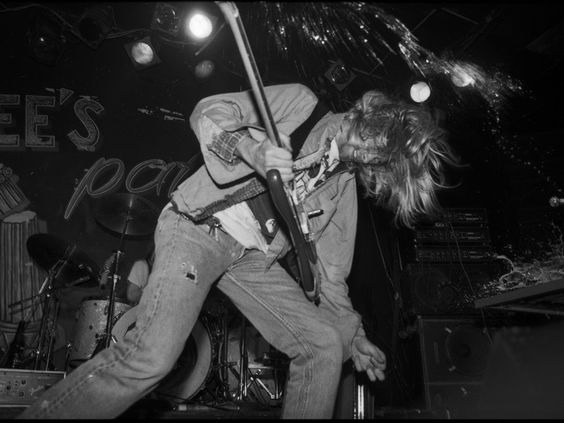

Underground significa subterrâneo em português, e é usado para chamar a cultura que foge dos padrões normais e conhecidos pela sociedade. Underground geralmente é aquilo que não está na mídia, sendo qualquer forma de expressão atráves da arte.
Nesse site será abordado sobre a música underground e seus diversos estilos desde o indie ao black metal.
Fonte: Portal Significados, 2019.
O cenário Underground se criou justamente para essas mesmas bandas independentes. São muitos festivais, shows e projetos que passam despercebidos pela grande mídia, mas que, ao mesmo tempo atraem um grande público. {...}
Por mais rico culturalmente que seja esse outro universo da música que existe no mundo, a grande maioria dos projetos sofre muito para se manter e sobreviver. Um dos fatores que causam esses grandes obstáculos é a falta de investimentos, porém a falta de visibilidade na mídia seja na TV, internet ou rádio contribuem para que essas incríveis bandas não consigam ter um crescimento.
Um detalhe interessante é que algumas bandas tem como objetivo deixar de ser independentes e assinar com uma gravadora para conseguirem dinheiro e sucesso.
Fonte: Lab de Jo, 2018.

Caso tenha interesse em bandas underground, clique no link abaixo para uma recomendação de uma banda brasileira de rock, chamada de "Molho Negro":
Abaixo está uma pequena tabela com 3 recomendações de bandas/artistas de diferentes genêros para você se aprofundar mais no universo underground: